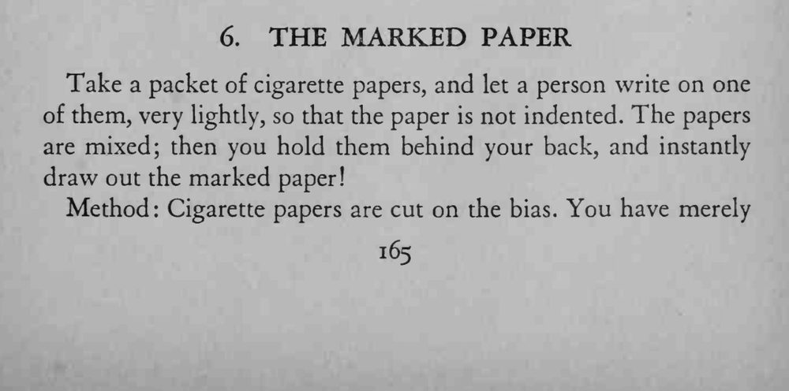
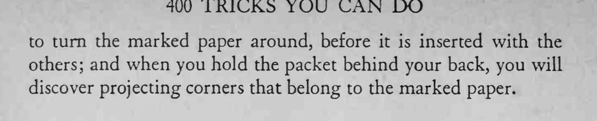

观众在一张卷烟纸上轻轻写字，混进整叠后，魔术师把纸叠拿到背后，一抽就抽出那张记号纸。
卷烟纸是斜切的，关键在先让记号纸方向相反。


Take a packet of cigarette papers, and let a person write on one of them, very lightly, so that the paper is not indented. The papers are mixed; then you hold them behind your back, and instantly draw out the marked paper! Method Cigarette papers are cut on the bias. You have merely to turn the marked paper around, before it is inserted with the others; and when you hold the packet behind your back, you will discover projecting corners that belong to the marked paper.